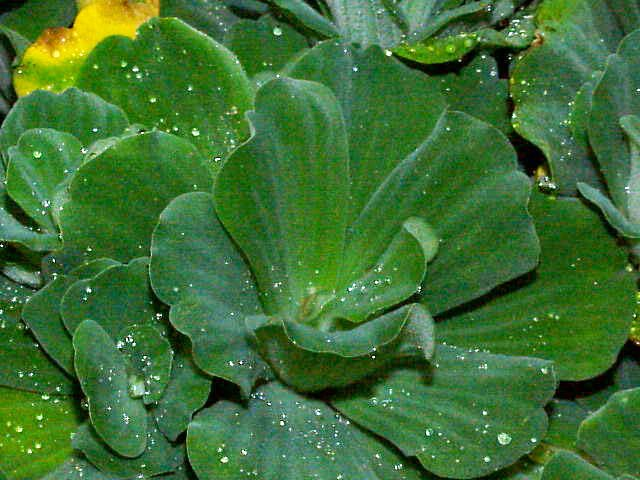

जलपत्ताWater Lettuce
Pistia stratiotes · Araceae · FLR-0029

- Scientific name
- Pistia stratiotes L.
- Family
- Araceae
- Hindi
- जलपत्ता
- Status here
- invasive
- IUCN
- LC
When to look कब देखें
Present all year.
जलपत्ता / Water Lettuce
Pistia stratiotes L. — Araceae
जलपत्ता — पूर्वी उत्तर प्रदेश के तालाबों और नहरों की सतह पर तैरने वाला एक आक्रामक जलीय पौधा, जो देखने में एक छोटे तैरते हुए पत्तागोभी या लेटिस (सलाद पत्ता) जैसा लगता है। इसके मखमली पीले-हरे पत्तों पर समानांतर शिराएँ होती हैं और उन पर बारीक जल-रोधी बाल होते हैं जो इसे तैरने में मदद करते हैं। यह पौधा पानी की सतह पर तेजी से फैलकर धूप और हवा को पानी में जाने से रोकता है, जिससे जलीय जीवन (विशेषकर मछलियां) प्रभावित होती हैं। इसके अलावा, इसकी घनी काली जड़ें मलेरिया और फाइलेरिया फैलाने वाले मच्छरों के लार्वा के पनपने का मुख्य अड्डा बनती हैं।
Quick Identification त्वरित पहचान
| Feature | Description |
|---|---|
| Habitat Class | Free-floating aquatic plant; floats freely on the surface of standing or slow-moving water |
| Leaves | Wedge-shaped, pale yellowish-green, arranged in a tight cabbage-like rosette; soft velvety texture |
| Leaf Hairs | Covered in dense, soft, water-repellent hairs (trichomes) that trap air and keep the leaf dry |
| Petiole | Session leaves; lacks any distinct leaf stalks or petioles |
| Flowers | Tiny, greenish-white, inconspicuous; hidden in the center of the rosette inside a small leaf-like bract |
| Roots | Massive, feathery, dangling roots (up to 50 cm long); suspended in the water column |
Field tip: Look for pale-green, velvet-textured rosettes that resemble small open cabbages floating on the water surface. Squeezing a leaf reveals a spongy, air-filled internal structure. Unlike Water Hyacinth, it has no swollen leaf stalks and lacks showy purple flowers.
Morphology आकारिकी
Biometrics (typical measurements in the Gangetic plain):
| Feature | Measurement |
|---|---|
| Plant height | 2–15 cm |
| Leaf length | 2–10 cm |
| Leaf width | 1.5–6.0 cm |
| Flower diameter | 2–4 mm |
| Fruit dimensions | 4–6 mm |
Rosette: A compact, stemless rosette of leaves floating on the water surface, varying from 5 to 20 cm in diameter depending on nutrient levels.
Leaves: Sessile, obovate to wedge-shaped (cuneate), 2–10 cm long, with a rounded or flat top margin. The leaves are pale yellowish-green, soft, and velvety due to a cover of dense, water-repellent, unbranched hairs (trichomes). The leaf tissue is spongy and filled with large air spaces (aerenchyma), providing buoyancy. The leaves display prominent parallel longitudinal veins.
Flowers: Monoecious, extremely small, and hidden in the center of the rosette. They are clustered on a tiny spadix enclosed in a white-green hairy spathe (2–4 mm wide).
Fruit: A small, thin-walled green berry, 4–6 mm in size, containing tiny, oblong seeds.
Roots: A dense, feathery, highly branched root system that hangs suspended in the water, extending up to 50 cm. The roots stabilize the floating plant and absorb nutrients directly from the water column.
Ecological Role पारिस्थितिक भूमिका
Invasive weed. Pistia stratiotes forms extensive, interlocking mats that block sunlight from reaching submerged aquatic plants and benthic algae.
Oxygen depleter. The dense mats prevent atmospheric oxygen from dissolving in the water. As older leaves rot and decompose beneath the mats, they consume dissolved oxygen, creating anaerobic conditions that lead to localized fish kills.
Mosquito vector host. The dense, feathery root system provides an ideal, protected breeding site for mosquitoes of the genus Mansonia. The larvae of these mosquitoes tap into the air channels of the Pistia roots using their specialized breathing siphons, obtaining oxygen without surfacing.
Life Cycle / Phenology जीवन चक्र
- Vegetative reproduction: The primary method of spread. Stolons (runners) emerge from the leaf axils, producing new daughter rosettes that soon detach and float away. Under warm, nutrient-rich conditions, populations can double in less than two weeks.
- Sexual reproduction: Flowers appear from August to November. Seeds are produced in small berries, which sink to the bottom when mature and germinate in mud during spring.
- Winter slowdown: Vegetative growth slows significantly during winter (December–January). Many outer leaves turn brown and rot, but the core rosette remains viable.
Host Plants or Prey आहार
Associated organisms:
- Larvae of Mansonia mosquitoes attach directly to the root system.
- Tiny water insects and snails graze on the epiphytic algae attached to the roots.
Predators / Natural Enemies शत्रु
- Pond Snails (Pila globosa) — consume the soft leaf tissues from below.
- Weevils (such as Neohydronomus affinis) — feed on the leaves and are used as biological control agents globally.
- Grass Carp — consume the plant in managed fish ponds.
Agricultural / Human Relevance कृषि प्रासंगिकता
Irrigation obstacle. The rapid multiplication of water lettuce blocks agricultural drainage ditches and irrigation canals around Basti, reducing water flow to crop fields and increasing the risk of field waterlogging during heavy monsoon rains.
Public health concern. By harboring Mansonia mosquito larvae, dense mats of water lettuce increase the transmission risk of lymphatic filariasis (elephantiasis) and other mosquito-borne infections in rural communities.
Uses. In traditional local medicine, leaf paste is sometimes applied externally to treat skin conditions like eczema. The dried biomass is occasionally collected and added to cattle dung piles for composting.
Expected Locally स्थानीय रूप से अपेक्षित
Not a field record. Written from published accounts for eastern Uttar Pradesh. No confirmed local sighting yet — if you have seen it, that is what the atlas needs.
अभी तक स्थानीय पुष्टि नहीं। यह विवरण प्रकाशित स्रोतों से है, किसी अवलोकन से नहीं।
Commonly observed in slow-moving canals, drainage channels, and neglected village ponds throughout Basti district. During the late monsoon (September–October), it often forms continuous, bright green carpets that completely obscure the water surface of roadside ditches and small village waterbodies.
Distribution वितरण
Global range: Pantropical. Its native origin is disputed (possibly tropical South America or Africa), but it is now naturalized and highly invasive across tropical and subtropical zones of Asia, Africa, and the Americas.
In India: Widespread in warm freshwater habitats across almost all states.
In Uttar Pradesh: Abundant and widespread, particularly in slow-flowing drainage channels and nutrient-rich village ponds.
In Basti district / eastern UP: Ubiquitous in stagnant or sluggish water bodies throughout the rural plains.
Range notes: No significant range changes documented.
Research Questions शोध प्रश्न
Anyone can investigate these | कोई भी इन प्रश्नों की जाँच कर सकता है
- How fast do water lettuce mats expand in your local village pond during the peak monsoon (July–September)? / मानसून के दौरान (जुलाई-सितंबर) आपके गाँव के तालाब में जलपत्ता की परत कितनी तेज़ी से फैलती है? — Measure and record surface cover percentage weekly.
- Are Mansonia mosquito pupae present in the feathery root mats of water lettuce in your area? / क्या आपके क्षेत्र में जलपत्ता की घनी जड़ों में मैन्सोनिया मच्छर के प्यूपा पाए जाते हैं? — Collect roots from different ponds and inspect for attached pupae.
- How does the water quality (pH, turbidity, and smell) change under a 100% water lettuce mat? — Compare water samples from under the mat vs. an open water section of the same pond.
- Does water lettuce density decrease in ponds where domestic ducks are allowed to forage? / क्या उन तालाबों में जलपत्ता की संख्या कम होती है जहाँ बत्तखें चरती हैं? — Document and compare ponds with and without ducks.
- How long can a dried rosette survive out of water on a damp pond bank before dying? — Test survival rates of rosettes left on mud banks for 1, 3, 5, and 7 days.
Similar Species मिलती-जुलती प्रजातियाँ
| Species | How to tell apart | हिंदी |
|---|---|---|
| Water Hyacinth (Pontederia crassipes) | Much larger; glossy green leaves with swollen leaf stalks; showy violet flower spikes | जलकुंभी — सूजे हुए डंठल, बैंगनी फूल |
| Duckweed (Lemna spp.) | Tiny, individual green discs (2–5 mm) floating on the surface; lacks rosette structure | बत्तख घास — बहुत छोटा पौधा |
| Water Fern (Salvinia molesta) | Floating fern with paired, oval leaves covered in egg-beater-like hairs; lacks cabbage rosette | जलीय फर्न — छोटे तैरते जोड़े पत्ते |
Field rule: Spongy, pale green, velvet-textured sessile leaves arranged in a tight cabbage-like floating rosette identify Pistia stratiotes.
Taxonomy & Classification वर्गीकरण
Original description. Carl Linnaeus described the species as Pistia stratiotes in 1753 in Species Plantarum (Vol. 2, p. 963). The type locality is India and Ceylon (Sri Lanka). The genus name Pistia is derived from the Greek pistos (watery), while the species epithet stratiotes refers to a soldier or water-soldier, indicating its stout, clustering habit.
Subspecies. Monotypic — no subspecies are currently recognised.
Family and order placement. Placed in the order Alismatales, family Araceae (arum family). It is a highly specialized, free-floating member of the Araceae, showing dramatic vegetative reduction compared to terrestrial arums.
Phylogenetic notes. Pistia is a isolated, monotypic genus. Molecular studies show it is closely related to the genus Protarum.
IUCN status rationale. Listed as Least Concern (LC). The species is highly abundant, widely distributed, and has expanding global populations, particularly in nutrient-enriched waterbodies.
Photo Gallery फोटो गैलरी
References संदर्भ
- Linnaeus, C. (1753). Species Plantarum. Vol. 2. Laurentii Salvii, Holmiae, p. 963.
- Cook, C.D.K. (1996). Aquatic and Wetland Plants of India. Oxford University Press, Oxford.
- Lounibos, L.P. & Escher, R.L. (1985). Association of Mansonia larvae with Pistia stratiotes in Florida. Environmental Entomology, 14(2), 156–159.
- Neuenschwander, P. et al. (2009). Biological control of water lettuce (Pistia stratiotes) in Africa. Biocontrol Science and Technology, 19(8), 785–802.
- Botanical Survey of India — Flora of Uttar Pradesh.
- GBIF Occurrence Data — Pistia stratiotes, Uttar Pradesh (2010–2025).
Source file: species/flora/aquatic/water_lettuce.md